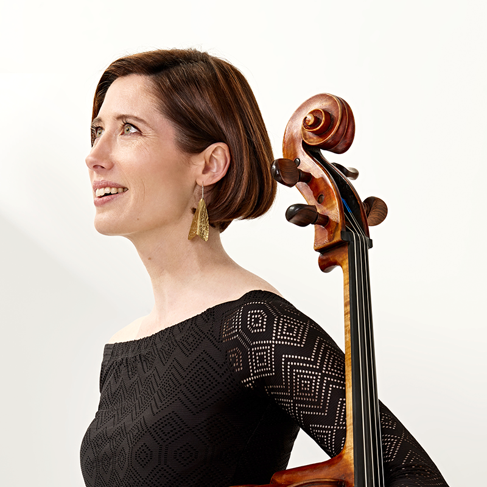
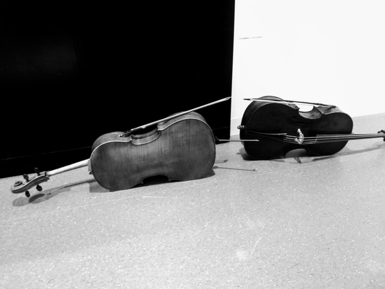

About
Josephine is a versatile and engaging performer, heard regularly in concert around Australia and overseas as a cellist and chamber musician.
She has worked with myriad artists on diverse projects including piano trio / quartet / quintet, string quartet, opera, baroque ensembles, contemporary and electronic music, and Argentine tango music.
Josephine is a founding member of Firebird Trio, currently presenting innovative and engaging programs around Australia. Equally at home on modern and period instruments, Josephine performs and records regularly with other ensembles including Melbourne Chamber Orchestra, Kammermusik, Accademia Arcadia, Ludovico’s Band, Australian Romantic and Classical Orchestra, Elysium Ensemble and Melbourne Baroque Orchestra.

Josephine Vains was an expressive soloist and fabulous internal communicator in a vibrant and muscular performance of Schubert's Piano Trio in E flat. — The Age
In Australia she has performed for Australian Digital Concert Hall, Melbourne Recital Centre, Musica Viva, the Sydney and Melbourne Arts Festivals, Noosa Long Weekend, Castlemaine and Port Fairy Festivals, Woodend Winter Arts and Organs of the Ballarat Goldfields Festivals. International performances include at the Musicfest Vancouver, the Hannover Brahms and Schumann Festivals, White Nights Festival in St. Petersburg and more recently at the Longyou Caves Festival (China) and Akaroa Chamber Music Festival (NZ).
Josephine features on a number of albums including; Royal Children's Hospital HUSH, ABC Classics, Resonus Classics, Tall Poppies, and has been reviewed in GRAMOPHON Magazine. In 2020 she was the winner of the Moreland Award for Arts and Culture for her contribution to community during Covid-19 lockdown with a series of Letterbox Concerts. She is a Laureate of MICMC 1999 with Trio 303, and was the winner of the inaugural National Chamber Music Competition. She has Honours and Masters degrees in modern and historical performance from Melbourne, Germany and Switzerland.
She performs on a Thomas Kennedy Cello, 1850 (London) and a Thomas Dodd Cello, (1800) London.
...subtle tension is spun through carefully measured emphasis and silence, and all with a hugely sensitive chamber awareness between ensemble and soloist; listen out for cellist Josephine Vains’s attentive duetting... — Gramophone
